Lead capture, scoring & routing
Respond while intent is fresh, qualify with structured logic, then send each lead into the correct next action.
- Hot / warm / cold branches
- CRM pipeline updates
- Instant tailored follow-up
Lead response. Qualification. Booking. Follow-up. Operations. I connect the full journey so work moves without waiting for someone to copy, paste, chase, or remember.
Where automation creates leverage
The strongest automation is rarely the loudest. It removes delay, keeps context intact, and gives people a cleaner moment to make the decisions that still require judgment.
Respond while intent is fresh, qualify with structured logic, then send each lead into the correct next action.
Make inboxes, forms, spreadsheets, CRMs, calendars, and internal tools behave like one deliberate system.
Use AI for classification, extraction, drafting, and tool selection—inside clear boundaries and review points.
Tools & technology stack
I use each platform for a specific role in the system—from orchestration and AI reasoning to CRM execution, data handling, communication, and reliable delivery.
Custom logic, AI agents, APIs, webhooks, branching, and advanced workflow control.
Reliable app-to-app automation for lead capture, notifications, and daily operations.
Multi-step scenarios, routers, iterators, transformations, and complex visual flows.
 04
04Pipelines, calendars, contacts, forms, SMS, email, nurturing, and lifecycle automation.
Reasoning, extraction, classification, and agents.
Long-context analysis, planning, and coding support.
Operational data, lightweight reporting, and records.
Structured records and flexible workflow databases.
Relational data and durable application records.
Hosted database, auth, and real-time backends.
Email triage, replies, routing, and notifications.
Team alerts, approvals, and workflow visibility.
SMS, voice, call routing, and customer alerts.
Version control, repositories, and clean handoff.
API testing, payload inspection, and debugging.
Custom code, interfaces, and implementation work.
Define where information enters and normalize it before the workflow makes a decision.
Extract intent, urgency, category, or structured details using rules, AI, or both.
Route confidently, set fallback behavior, and keep edge cases from disappearing silently.
Send the reply, make the booking, update the CRM, and preserve a useful audit log.
Project archive
Browse by platform. Each system is framed around the bottleneck, the decision logic, and the business action it unlocks—so the work is easy to understand before the first call.
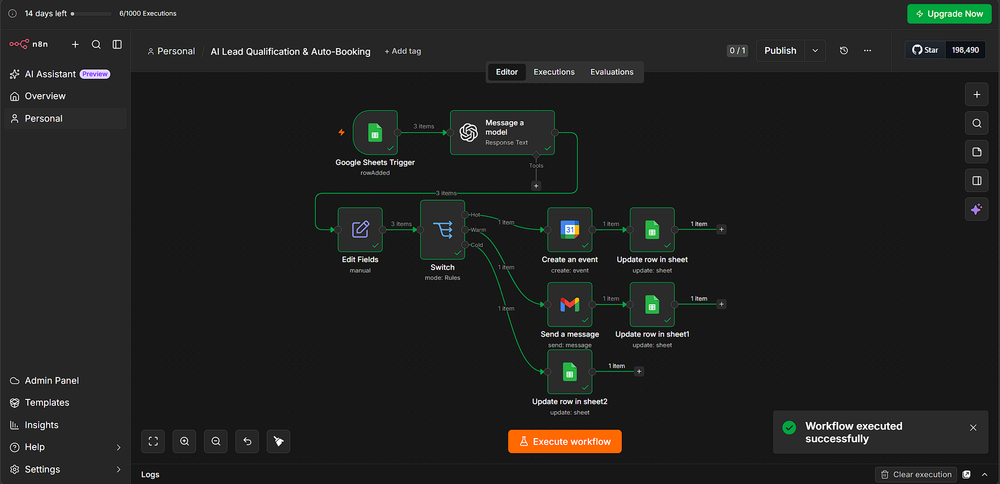
N8N / 01 CASE STUDY ↗Scores every inquiry by intent and fit, then books, follows up, or logs the lead through the correct branch.
Hot leads and low-intent inquiries often enter the same queue. When every lead receives the same response, teams lose time sorting—and the strongest opportunities wait too long.
The workflow captures the form submission, asks an AI model for structured qualification data, validates the response, and routes hot, warm, and cold leads into booking, nurture, or logging paths.
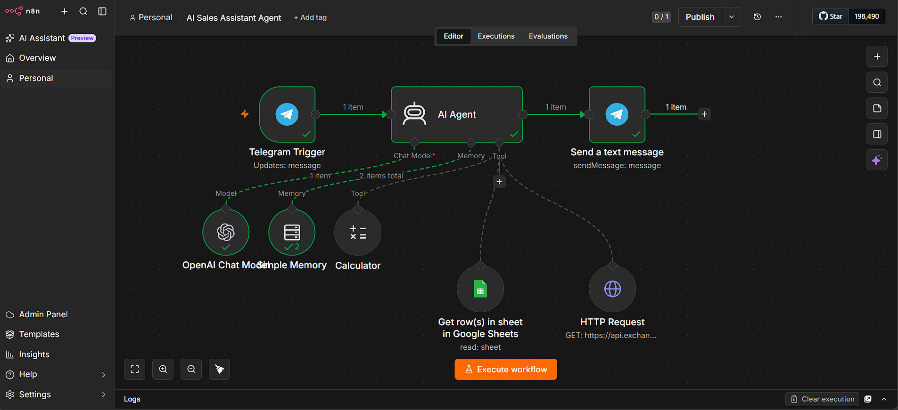
N8N / 02 CASE STUDY ↗A tool-using agent that chooses between pricing lookup, calculation, currency data, or a direct answer.
A rigid chatbot fails as soon as a question requires a live lookup, calculation, or external data. Hardcoding a separate path for every possible request does not scale.
The agent interprets the request, selects an approved tool, executes it, checks the result, and responds through Telegram. The system remains bounded by a defined tool set.
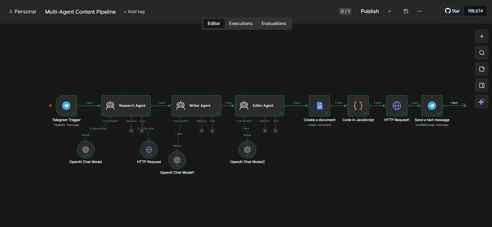
N8N / 03 CASE STUDY ↗Research, writing, and editorial agents work in sequence so drafts stay grounded before they reach review.
One-pass AI content is fast but difficult to trust. Facts can be weak, tone can drift, and the model has no independent check on its own output.
A research agent gathers source context, a writer agent creates the draft, and an editor agent compares the draft against the research before it is saved for human review.
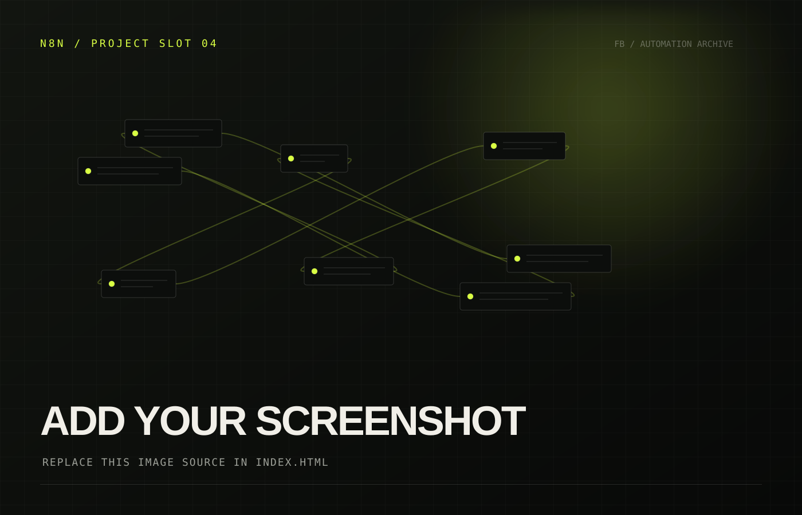
N8N / 04 EMPTY SLOT ↗Replace this paragraph with a clear one- or two-sentence explanation of what the automation does and why it matters.
Replace this paragraph with the manual bottleneck, missed opportunity, or operational problem the project solves.
Replace this paragraph with the workflow logic, important integrations, decisions, and final business outcome.
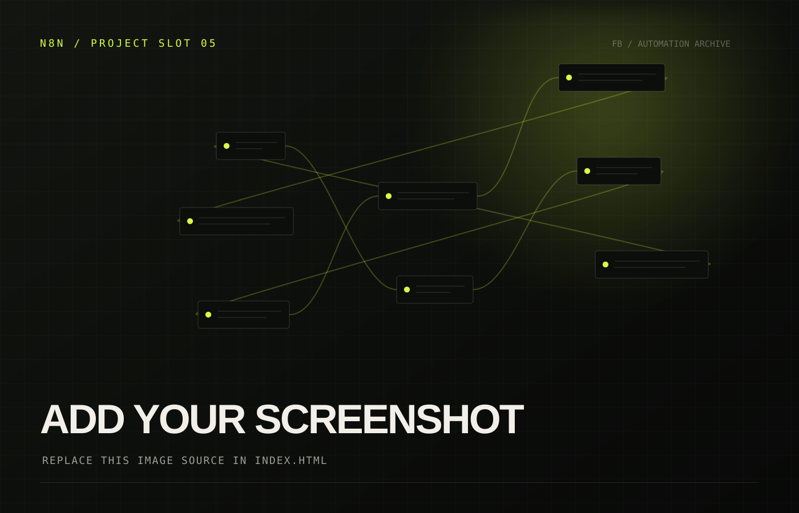
N8N / 05 EMPTY SLOT ↗Replace this paragraph with a clear one- or two-sentence explanation of what the automation does and why it matters.
Replace this paragraph with the manual bottleneck, missed opportunity, or operational problem the project solves.
Replace this paragraph with the workflow logic, important integrations, decisions, and final business outcome.
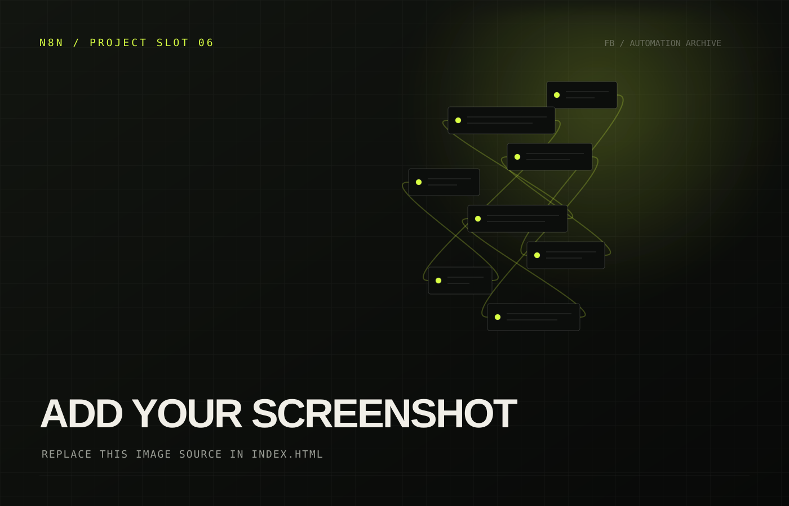
N8N / 06 EMPTY SLOT ↗Replace this paragraph with a clear one- or two-sentence explanation of what the automation does and why it matters.
Replace this paragraph with the manual bottleneck, missed opportunity, or operational problem the project solves.
Replace this paragraph with the workflow logic, important integrations, decisions, and final business outcome.
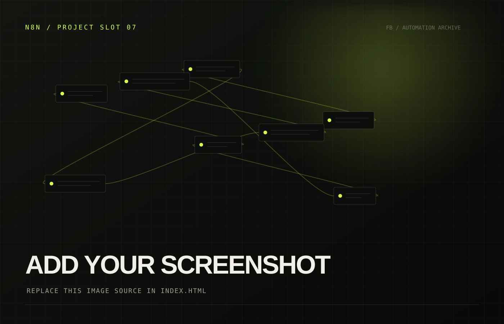
N8N / 07 EMPTY SLOT ↗Replace this paragraph with a clear one- or two-sentence explanation of what the automation does and why it matters.
Replace this paragraph with the manual bottleneck, missed opportunity, or operational problem the project solves.
Replace this paragraph with the workflow logic, important integrations, decisions, and final business outcome.
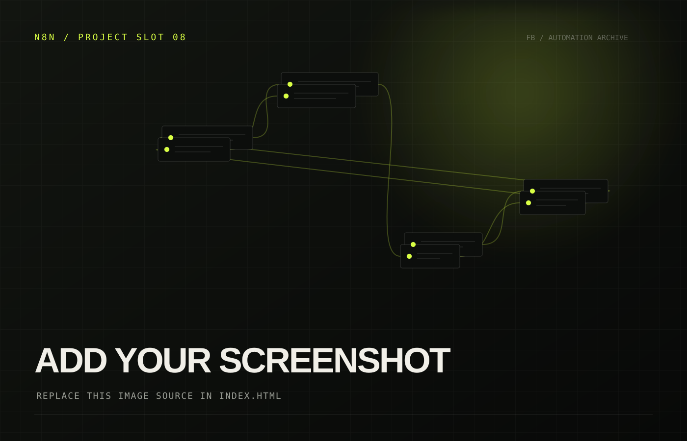
N8N / 08 EMPTY SLOT ↗Replace this paragraph with a clear one- or two-sentence explanation of what the automation does and why it matters.
Replace this paragraph with the manual bottleneck, missed opportunity, or operational problem the project solves.
Replace this paragraph with the workflow logic, important integrations, decisions, and final business outcome.
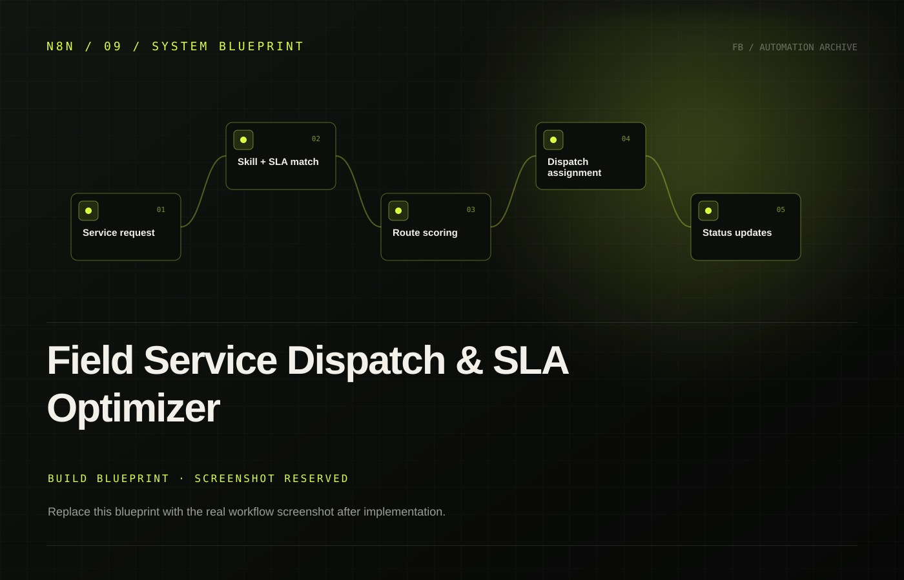
N8N / 09 EMPTY SLOT ↗Replace this paragraph with a clear one- or two-sentence explanation of what the automation does and why it matters.
Replace this paragraph with the manual bottleneck, missed opportunity, or operational problem the project solves.
Replace this paragraph with the workflow logic, important integrations, decisions, and final business outcome.
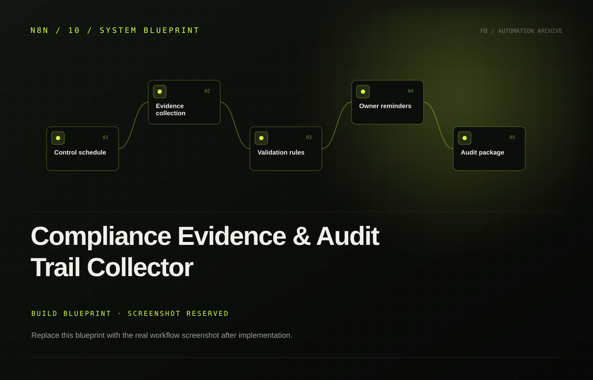
N8N / 10 EMPTY SLOT ↗Replace this paragraph with a clear one- or two-sentence explanation of what the automation does and why it matters.
Replace this paragraph with the manual bottleneck, missed opportunity, or operational problem the project solves.
Replace this paragraph with the workflow logic, important integrations, decisions, and final business outcome.
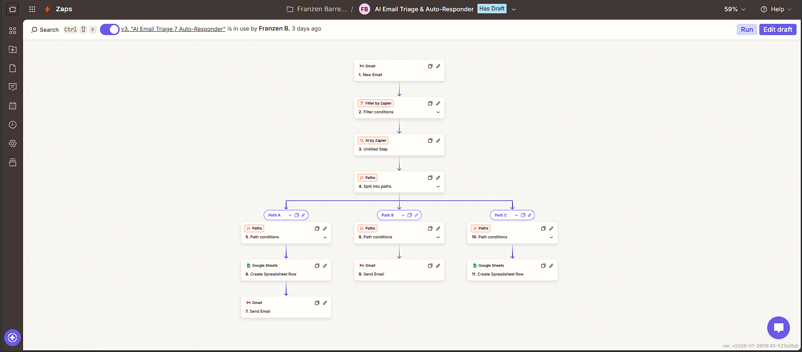
ZAP / 01 CASE STUDY ↗Classifies incoming messages by topic and urgency, drafts the next response, and escalates sensitive issues.
Billing questions, technical problems, general inquiries, and spam arrive in one queue. Someone must read every email before the real work can begin.
A Gmail trigger sends the message through AI classification, then Zapier Paths route it to acknowledgment, logging, priority alerts, or a human review step.
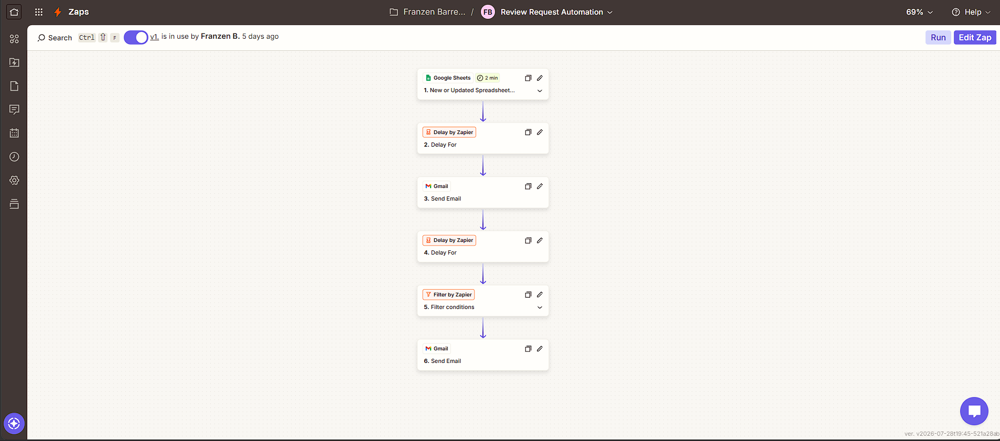
ZAP / 02 CASE STUDY ↗Times the review request after service, checks response status, and routes negative feedback privately.
Satisfied customers rarely leave reviews without a well-timed prompt, while manually remembering every follow-up is easy to miss during busy weeks.
A completed-job event triggers a delay, sends the request, checks whether the customer responded, and follows up only when needed. Low ratings can be directed to private feedback.
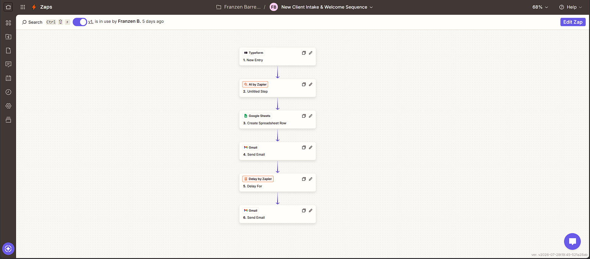
ZAP / 03 CASE STUDY ↗Turns one intake submission into a clean client record, tailored welcome, and kickoff reminder.
After a client submits an intake form, details often get copied into multiple tools while welcome emails and kickoff reminders depend on memory.
The submission is normalized, saved to a client record, used to prepare a personalized welcome email, and followed by a scheduled kickoff reminder.
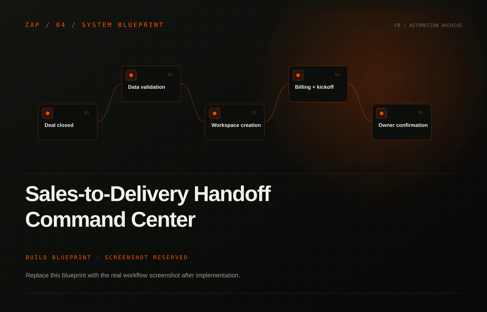
ZAP / 04 EMPTY SLOT ↗Replace this paragraph with a clear one- or two-sentence explanation of what the automation does and why it matters.
Replace this paragraph with the manual bottleneck, missed opportunity, or operational problem the project solves.
Replace this paragraph with the workflow logic, important integrations, decisions, and final business outcome.
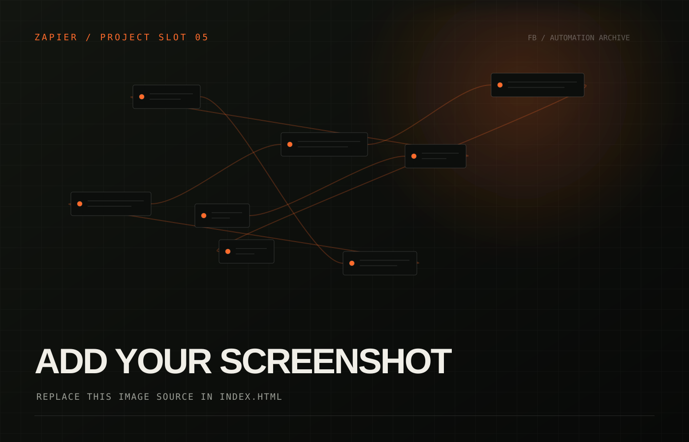
ZAP / 05 EMPTY SLOT ↗Replace this paragraph with a clear one- or two-sentence explanation of what the automation does and why it matters.
Replace this paragraph with the manual bottleneck, missed opportunity, or operational problem the project solves.
Replace this paragraph with the workflow logic, important integrations, decisions, and final business outcome.
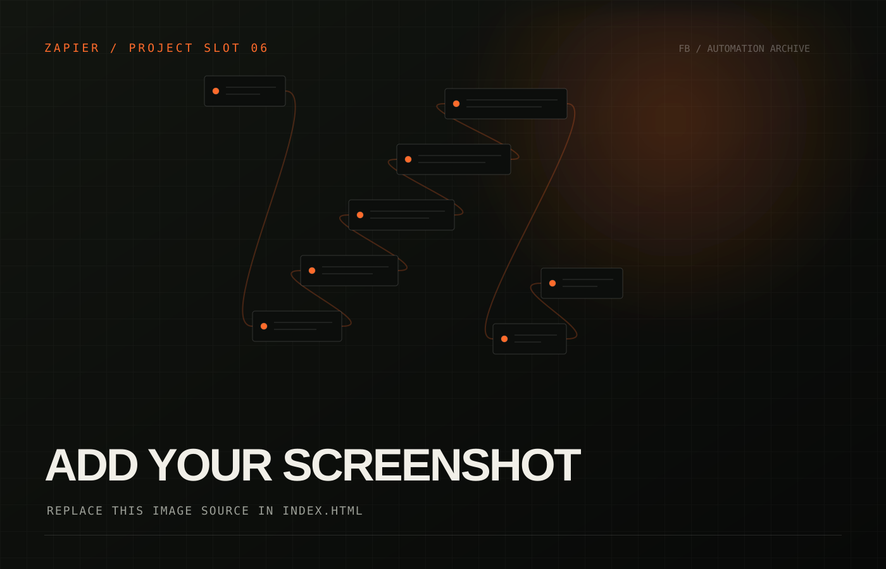
ZAP / 06 EMPTY SLOT ↗Replace this paragraph with a clear one- or two-sentence explanation of what the automation does and why it matters.
Replace this paragraph with the manual bottleneck, missed opportunity, or operational problem the project solves.
Replace this paragraph with the workflow logic, important integrations, decisions, and final business outcome.
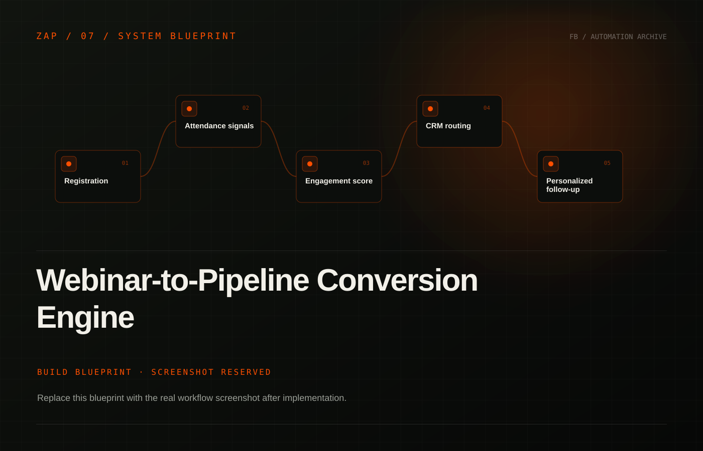
ZAP / 07 EMPTY SLOT ↗Replace this paragraph with a clear one- or two-sentence explanation of what the automation does and why it matters.
Replace this paragraph with the manual bottleneck, missed opportunity, or operational problem the project solves.
Replace this paragraph with the workflow logic, important integrations, decisions, and final business outcome.
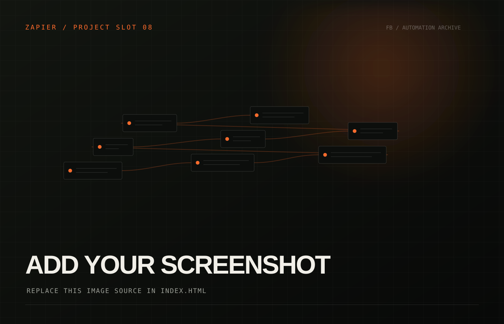
ZAP / 08 EMPTY SLOT ↗Replace this paragraph with a clear one- or two-sentence explanation of what the automation does and why it matters.
Replace this paragraph with the manual bottleneck, missed opportunity, or operational problem the project solves.
Replace this paragraph with the workflow logic, important integrations, decisions, and final business outcome.
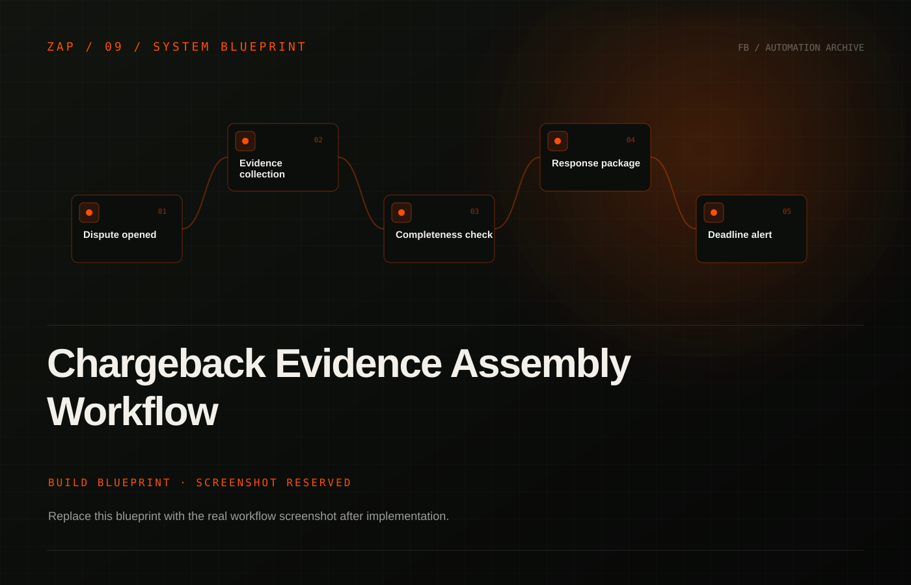
ZAP / 09 EMPTY SLOT ↗Replace this paragraph with a clear one- or two-sentence explanation of what the automation does and why it matters.
Replace this paragraph with the manual bottleneck, missed opportunity, or operational problem the project solves.
Replace this paragraph with the workflow logic, important integrations, decisions, and final business outcome.
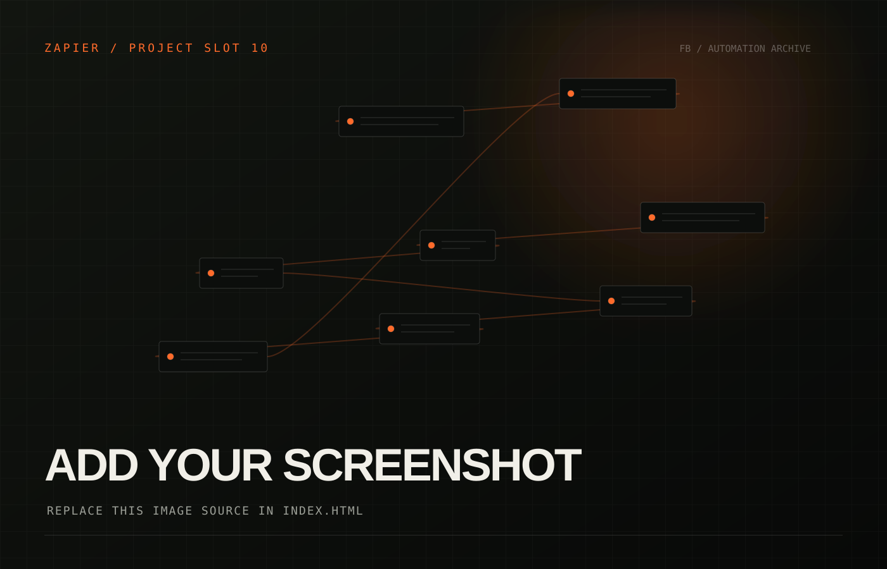
ZAP / 10 EMPTY SLOT ↗Replace this paragraph with a clear one- or two-sentence explanation of what the automation does and why it matters.
Replace this paragraph with the manual bottleneck, missed opportunity, or operational problem the project solves.
Replace this paragraph with the workflow logic, important integrations, decisions, and final business outcome.
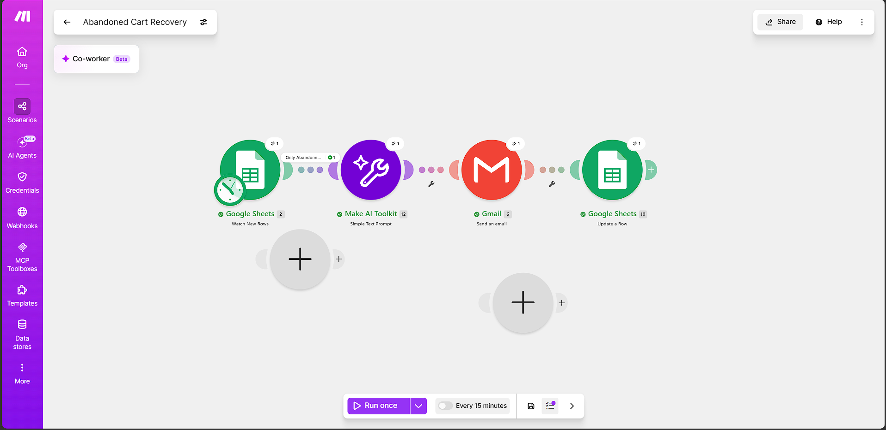
MAKE / 01 CASE STUDY ↗References the exact abandoned offer and changes the follow-up logic based on cart value.
A customer reaches the final booking or membership step, then leaves. Generic abandonment messages often fail because they ignore the exact offer and purchase context.
Make watches the abandoned-cart log, drafts a contextual message, applies value-based incentive logic, sends the recovery sequence, and records each attempt.
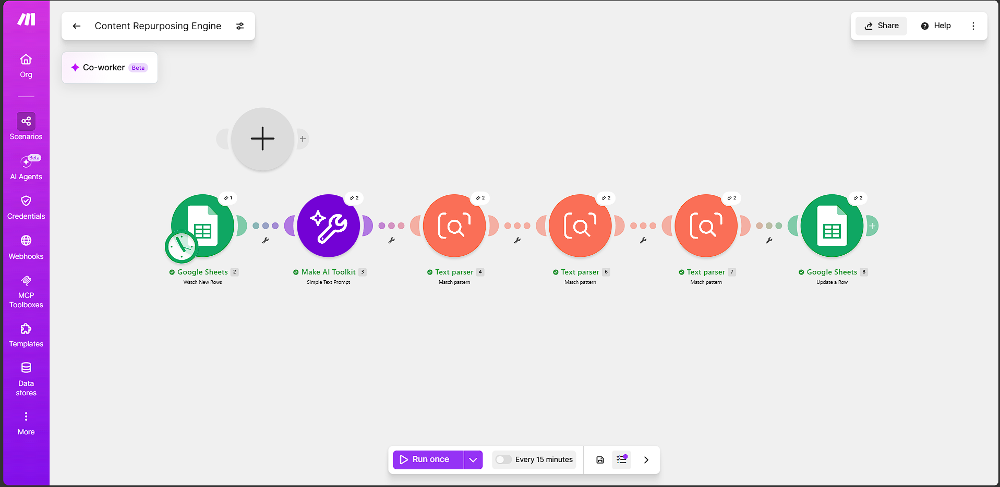
MAKE / 02 CASE STUDY ↗Transforms one source asset into multiple channel-specific drafts while preserving an approval queue.
Useful footage and notes often stay unused because turning one source into platform-ready content requires repeated writing and formatting.
The source is summarized, converted into several channel-specific drafts, parsed into structured fields, and placed in a review queue before anything is published.
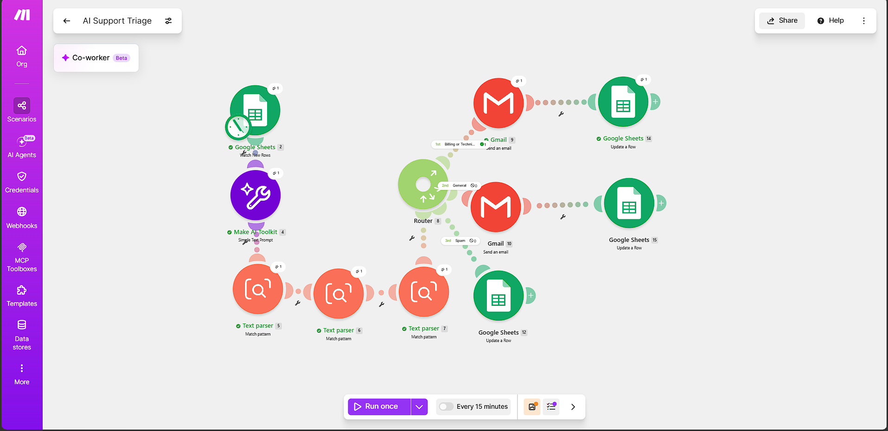
MAKE / 03 CASE STUDY ↗Reads, categorizes, prioritizes, drafts, and routes support tickets with a visible audit trail.
Support requests arrive with inconsistent structure. Urgent issues can wait behind simple questions or spam when every message needs manual sorting.
AI Toolkit classifies category and urgency, drafts a suggested response, then a router sends the ticket to priority alert, standard reply, or spam logging paths.
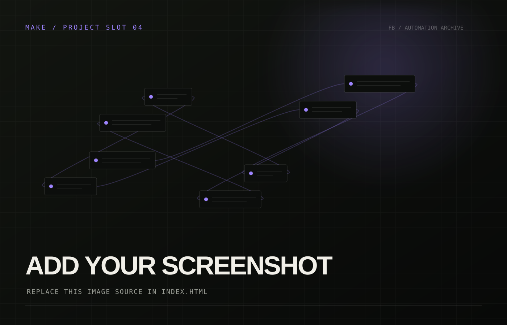
MAKE / 04 EMPTY SLOT ↗Replace this paragraph with a clear one- or two-sentence explanation of what the automation does and why it matters.
Replace this paragraph with the manual bottleneck, missed opportunity, or operational problem the project solves.
Replace this paragraph with the workflow logic, important integrations, decisions, and final business outcome.
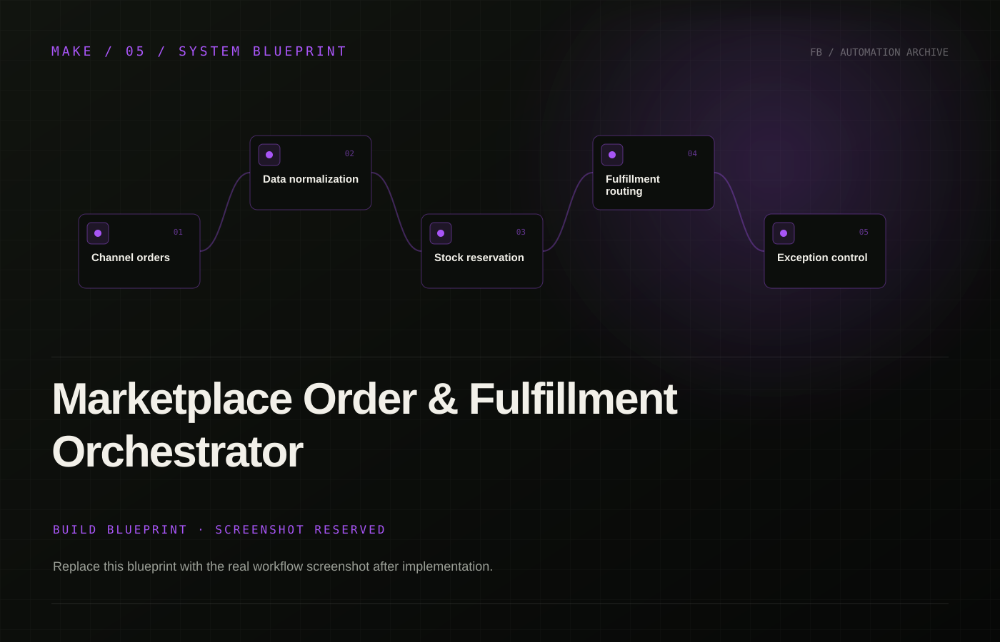
MAKE / 05 EMPTY SLOT ↗Replace this paragraph with a clear one- or two-sentence explanation of what the automation does and why it matters.
Replace this paragraph with the manual bottleneck, missed opportunity, or operational problem the project solves.
Replace this paragraph with the workflow logic, important integrations, decisions, and final business outcome.
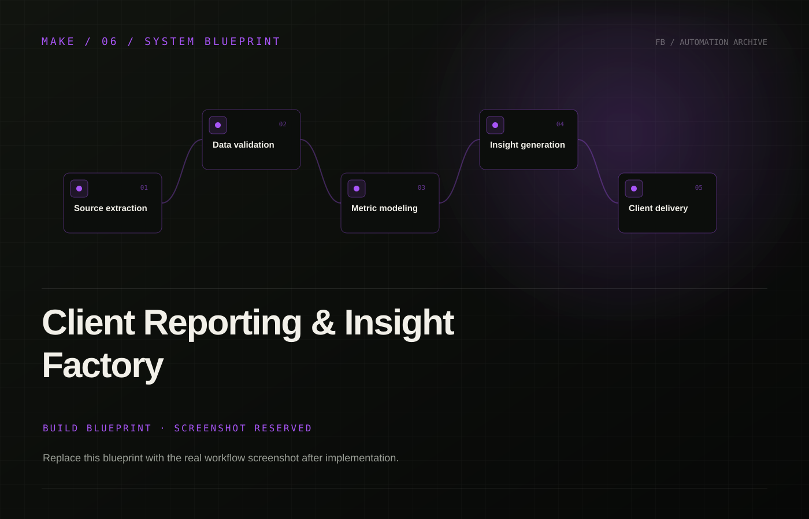
MAKE / 06 EMPTY SLOT ↗Replace this paragraph with a clear one- or two-sentence explanation of what the automation does and why it matters.
Replace this paragraph with the manual bottleneck, missed opportunity, or operational problem the project solves.
Replace this paragraph with the workflow logic, important integrations, decisions, and final business outcome.
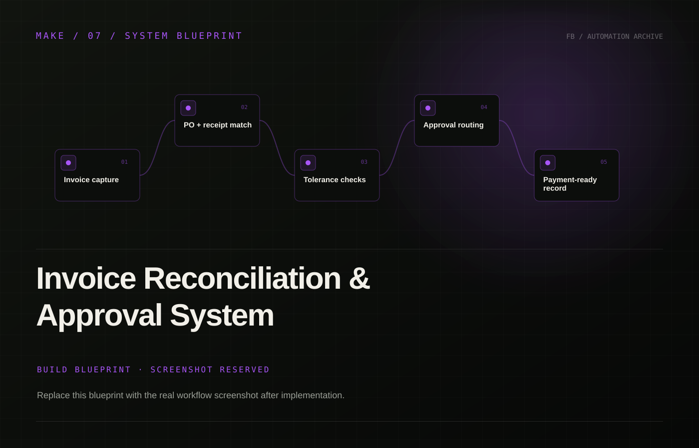
MAKE / 07 EMPTY SLOT ↗Replace this paragraph with a clear one- or two-sentence explanation of what the automation does and why it matters.
Replace this paragraph with the manual bottleneck, missed opportunity, or operational problem the project solves.
Replace this paragraph with the workflow logic, important integrations, decisions, and final business outcome.
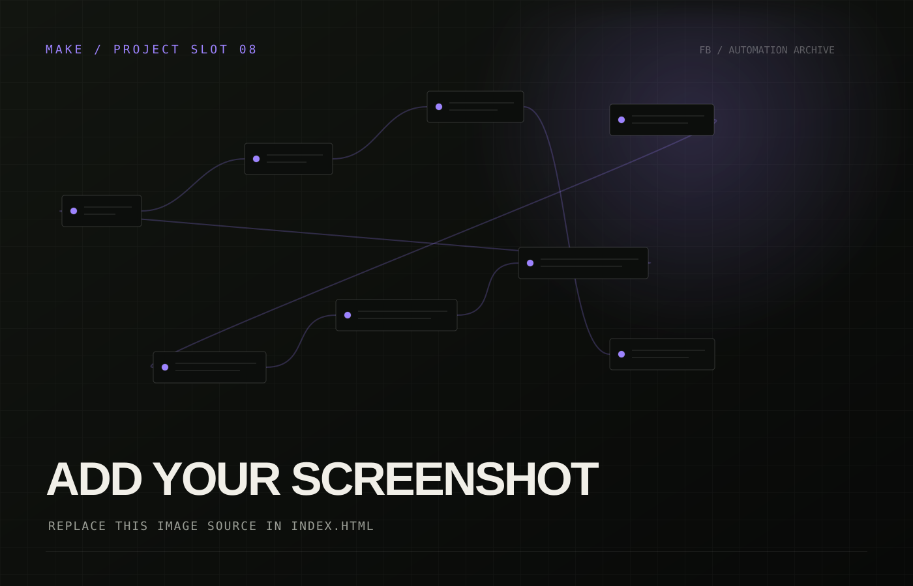
MAKE / 08 EMPTY SLOT ↗Replace this paragraph with a clear one- or two-sentence explanation of what the automation does and why it matters.
Replace this paragraph with the manual bottleneck, missed opportunity, or operational problem the project solves.
Replace this paragraph with the workflow logic, important integrations, decisions, and final business outcome.
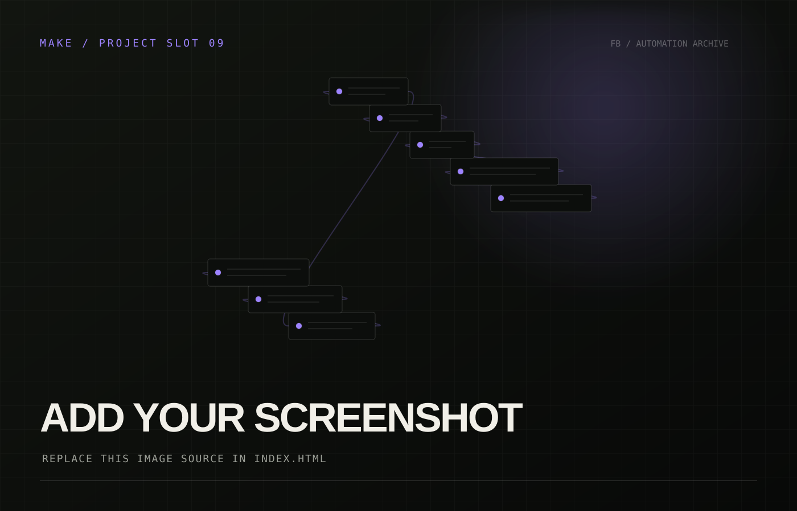
MAKE / 09 EMPTY SLOT ↗Replace this paragraph with a clear one- or two-sentence explanation of what the automation does and why it matters.
Replace this paragraph with the manual bottleneck, missed opportunity, or operational problem the project solves.
Replace this paragraph with the workflow logic, important integrations, decisions, and final business outcome.
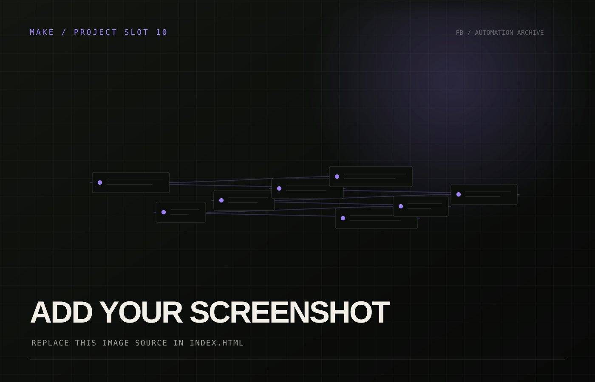
MAKE / 10 EMPTY SLOT ↗Replace this paragraph with a clear one- or two-sentence explanation of what the automation does and why it matters.
Replace this paragraph with the manual bottleneck, missed opportunity, or operational problem the project solves.
Replace this paragraph with the workflow logic, important integrations, decisions, and final business outcome.
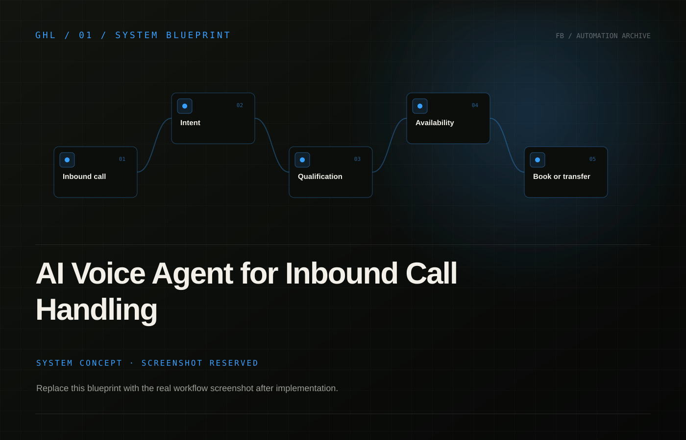
GHL / 01 ADD SCREENSHOT ↗Qualifies callers conversationally, checks availability, books appointments, and hands off when needed.
Calls that reach voicemail can become lost opportunities, but staffing a live phone line around the clock is unrealistic for many lean teams.
The voice agent identifies the caller’s need, checks approved knowledge and calendar availability, creates or updates the GoHighLevel record, and transfers calls that require human judgment.
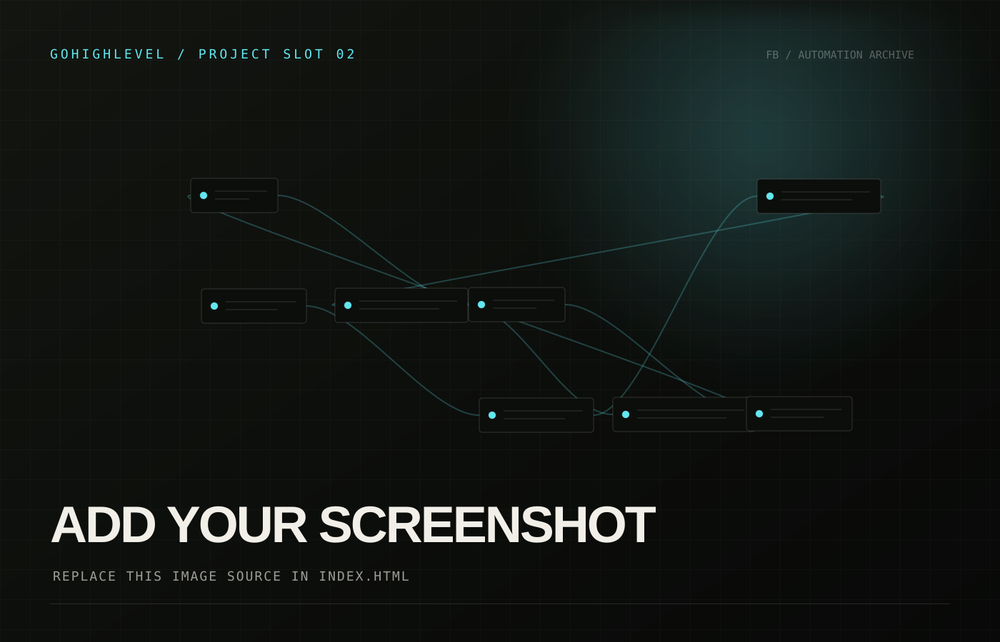
GHL / 02 ADD SCREENSHOT ↗Routes each lead into the correct location while preserving an owner-level rollup across branches.
Multi-location teams can end up with leads in the wrong pipeline, inconsistent local processes, and no clean view of performance across the full network.
Lead details determine the correct sub-account and branch pipeline, assign the responsible local team, and send standardized location metrics into a central owner-level reporting layer.
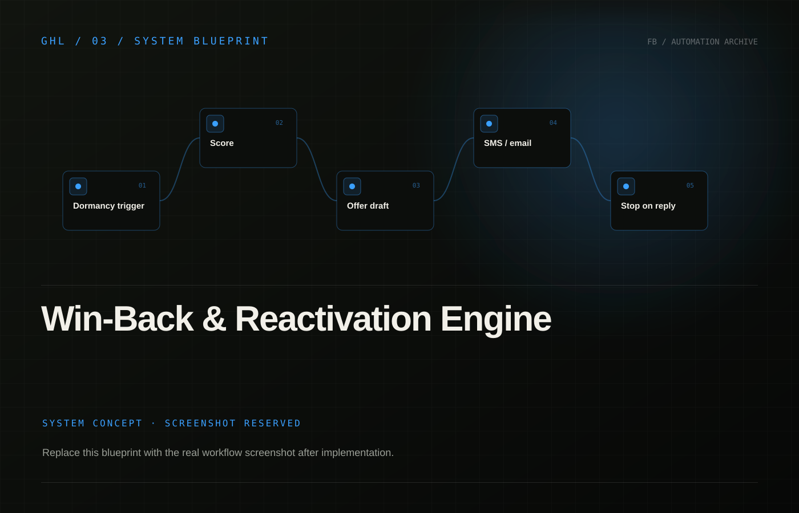
GHL / 03 ADD SCREENSHOT ↗Finds dormant contacts, prepares contextual offers, and stops the campaign immediately when someone replies.
Past customers quietly go inactive, but manually deciding who to contact, what to offer, and when to stop the sequence is difficult to run consistently.
Contacts crossing the inactivity threshold are scored, segmented, and sent a contextual SMS and email sequence. Reply events remove the contact immediately to prevent duplicate messaging.
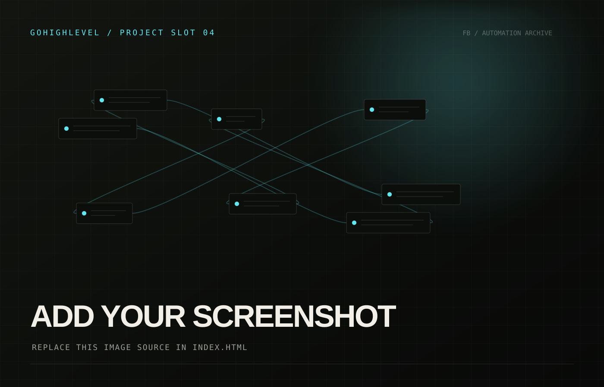
GHL / 04 EMPTY SLOT ↗Replace this paragraph with a clear one- or two-sentence explanation of what the automation does and why it matters.
Replace this paragraph with the manual bottleneck, missed opportunity, or operational problem the project solves.
Replace this paragraph with the workflow logic, important integrations, decisions, and final business outcome.
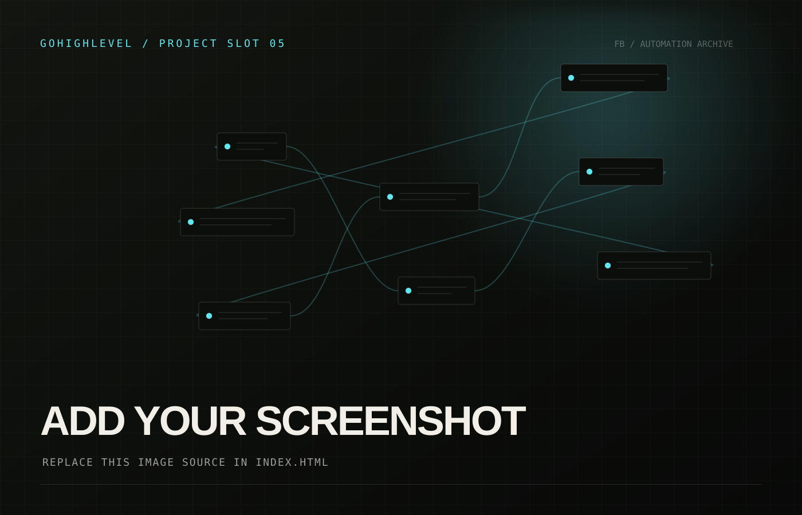
GHL / 05 EMPTY SLOT ↗Replace this paragraph with a clear one- or two-sentence explanation of what the automation does and why it matters.
Replace this paragraph with the manual bottleneck, missed opportunity, or operational problem the project solves.
Replace this paragraph with the workflow logic, important integrations, decisions, and final business outcome.
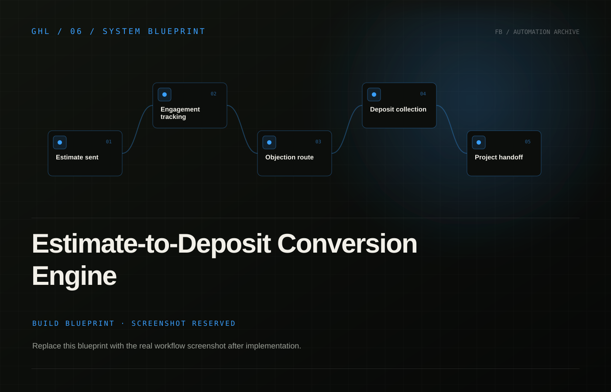
GHL / 06 EMPTY SLOT ↗Replace this paragraph with a clear one- or two-sentence explanation of what the automation does and why it matters.
Replace this paragraph with the manual bottleneck, missed opportunity, or operational problem the project solves.
Replace this paragraph with the workflow logic, important integrations, decisions, and final business outcome.
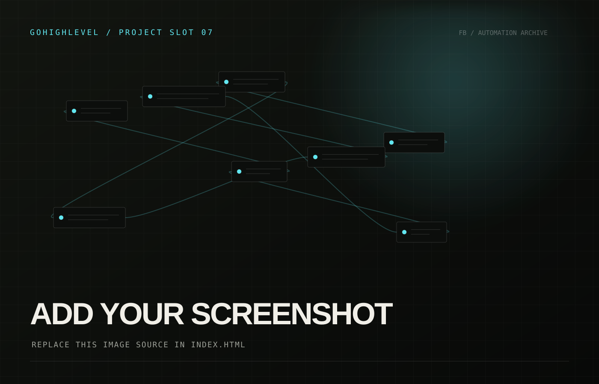
GHL / 07 EMPTY SLOT ↗Replace this paragraph with a clear one- or two-sentence explanation of what the automation does and why it matters.
Replace this paragraph with the manual bottleneck, missed opportunity, or operational problem the project solves.
Replace this paragraph with the workflow logic, important integrations, decisions, and final business outcome.
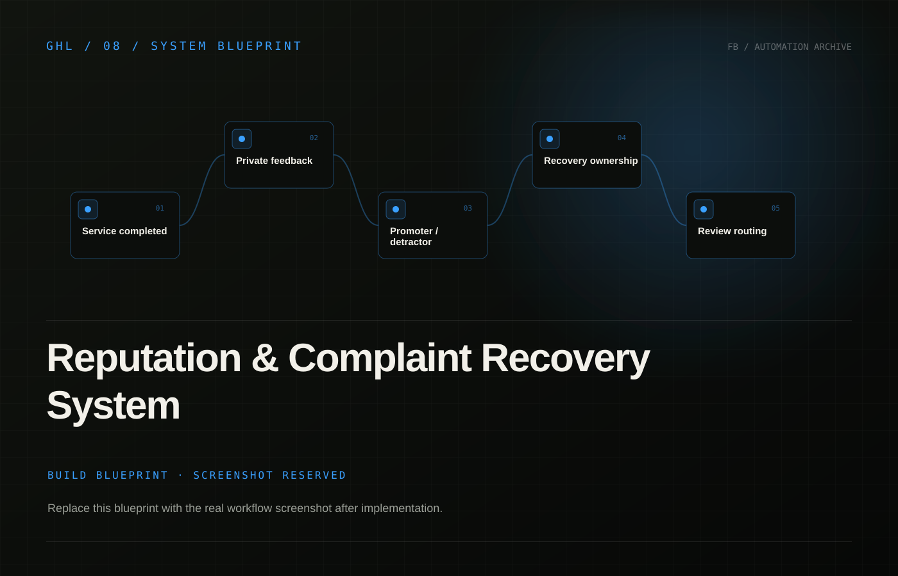
GHL / 08 EMPTY SLOT ↗Replace this paragraph with a clear one- or two-sentence explanation of what the automation does and why it matters.
Replace this paragraph with the manual bottleneck, missed opportunity, or operational problem the project solves.
Replace this paragraph with the workflow logic, important integrations, decisions, and final business outcome.
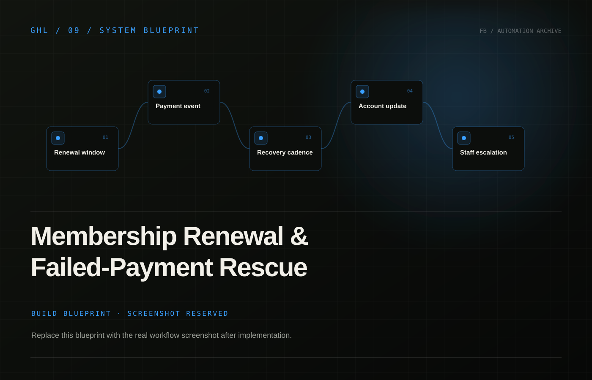
GHL / 09 EMPTY SLOT ↗Replace this paragraph with a clear one- or two-sentence explanation of what the automation does and why it matters.
Replace this paragraph with the manual bottleneck, missed opportunity, or operational problem the project solves.
Replace this paragraph with the workflow logic, important integrations, decisions, and final business outcome.
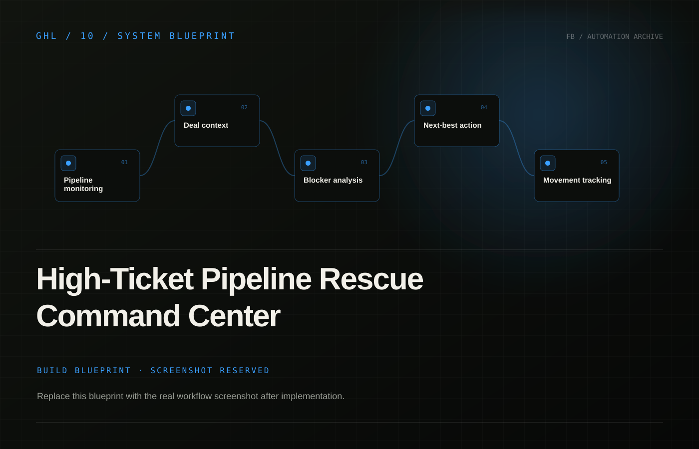
GHL / 10 EMPTY SLOT ↗Replace this paragraph with a clear one- or two-sentence explanation of what the automation does and why it matters.
Replace this paragraph with the manual bottleneck, missed opportunity, or operational problem the project solves.
Replace this paragraph with the workflow logic, important integrations, decisions, and final business outcome.
How I build
Automation should make the business feel more controlled, not more fragile.
The bottleneck, owner, decision rules, failure cases, and source of truth are defined before tools are connected.
AI handles repeatable interpretation. Humans stay in control where nuance, risk, or empathy matters.
Missing fields, duplicate events, weak AI output, API errors, and unexpected replies are part of the build—not afterthoughts.
Clear naming, readable logic, and straightforward documentation make the system easier to maintain after launch.
About the builder

I build practical automation systems across n8n, Zapier, Make, and GoHighLevel. The goal is not to add more software—it is to remove delay, preserve context, and make the next business action happen clearly.
Every build starts with the bottleneck, owner, decision rules, and desired outcome.
Clean logic, tested edge cases, visible fallbacks, and maintainable handoff.
AI handles repeatable interpretation while people keep control where judgment matters.
Send the workflow, bottleneck, or messy handoff. I’ll help turn it into a clear automation plan.